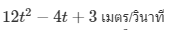

ความชันของเส้นโค้ง ณ จุด P(x,y) ใดๆ บนเส้นโค้ง y=f(x) หมายถึง ความชันของเส้นสัมผัสเส้นโค้ง ณ จุด P ซึ่งเท่ากับ f′(x) นั่นเอง
พื้นฐานสำคัญสำหรับเรื่องนี้คือ เรขาคณิตวิเคราะห์ ครับ โดยเฉพาะเรื่องของความชัน และสมการเส้นตรง
ตัวอย่าง การใช้สูตรการหาอนุพันธ์ในการแก้ปัญหาความชันของเส้นโค้ง
จงหาความชันของเส้นโค้ง ซึ่งเป็นกราฟของสมการ y=x^2+2 ที่จุดใดๆ
วิธีทำ หากใช้ความรู้ที่ว่า ความชันของเส้นโค้ง ณ จุด (x,y) ใดๆ เท่ากับ f′(x) จะได้
ตอบ ความชันของเส้นโค้งที่จุดใดๆ เท่ากับ 2x
ปัญหาเกี่ยวกับระยะทาง ความเร็ว และความเร่ง เราได้เรียนกันมาตั้งแต่วิทยาศาสตร์ระดับ ม.ต้น จนมาถึงวิชาฟิสิกส์ระดับ ม.ปลาย สูตรจำนวนมากมายที่เราท่องกัน เคยสงสัยกันบ้างไหมครับว่ามีที่มาอย่างไร เนื่องจากความเร่ง (a) ของวัตถุขณะเวลา t ใดๆ คืออัตราการเปลี่ยนแปลงของความเร็ว (v) เทียบกับเวลา t ถ้าวัตถุเคลื่อนที่ตามสมการ s=f(t) เมื่อ s คือระยะทางที่วัตถุเคลื่อนที่ได้ในเว ลา t แล้ว
จะได้ และ
ดังนั้น
นั่นคือ ความเร่งขณะเวลา t ใดๆ คืออนุพันธ์อันดับที่ 2 ของ s=f(t)
เพราะฉะนั้น จากสมการ
จะได้ นั่นเอง
ตัวอย่าง การประยุกต์เรื่องความเร็วและความเร่ง
วัตถุหนึ่งเคลื่อนที่ได้ระยะทาง เมตร เมื่อเวลาผ่านไป t วินาที จงหา
(1) ความเร็วของวัตถุขณะเวลา t ใดๆ
(2) ความเร่งของวัตถุขณะเวลา t ใดๆ
(3) ความเร่งของวัตถุขณะเวลาผ่านไป 2 วินาที
วิธีทำ จาก
(1) ความเร็วของวัตถุขณะเวลา t ใดๆ
(2) ความเร่งของวัตถุขณะเวลา t ใดๆ
(3) ความเร่งของวัตถุขณะเวลาผ่านไป 2 วินาที
ตอบ (1) ความเร็วของวัตถุขณะเวลา t ใดๆ เท่ากับ 
(2) ความเร่งของวัตถุขณะเวลา t ใดๆ เท่ากับ
(3) ความเร่งของวัตถุขณะเวลาผ่านไป 22 วินาที เท่ากับ
การหาค่าสูงสุดและค่าต่ำสุดสามารถนำมาประยุกต์ใช้ในการแก้ปัญหาได้อย่างหลากหลาย สิ่งสำคัญคือต้องพิจารณาเงื่อนไขของปัญหาให้ถูกต้อง หลักการทั่วๆ ไปในการแก้โจทย์ปัญหาเกี่ยวกับค่าสูงสุดและค่าต่ำสุดมีดังนี้
1. ทำความเข้าใจกับปัญหาอย่างละเอียดถี่ถ้วน เพื่อให้ทราบแน่นอนว่าต้องการหาค่าสูงสุดหรือค่าต่ำสุด และกำหนดสิ่งที่ต้องการหาด้วยตัวแปร y และกำหนด x แทนสิ่งที่กำหนดค่าของ y
2. เขียนสมการแสดงความสัมพันธ์ของ y และ x ในรูป y=f(x)
3. ดำเนินการตามขั้นตอนการหาค่าสูงสุดสัมพัทธ์และค่าต่ำสุดสัมพัทธ์
ตัวอย่าง พ่อค้าคนหนึ่งทราบว่าถ้าเขาตั้งราคาสินค้าอย่างหนึ่งชิ้นละ 20 บาท ในหนึ่งสัปดาห์เขาจะขายได้ 1,000 ชิ้น ถ้าเขาลดราคาลงชิ้นละ 1 บาท เขาจะขายสินค้าได้เพิ่มขึ้น 100 ชิ้นต่อสัปดาห์ ถ้าเขาลดราคาสินค้าลงชิ้นละ 2 บาท เขาจะขายสินค้าได้เพิ่ม 200 ชิ้นต่อสัปดาห์ เป็นเช่นนี้ไปเรื่อยๆ จงหาว่า เขาควรตั้งราคาสินค้าเท่าใดจึงจะได้เงินจากการขายมากที่สุด และรายได้เป็นเท่าไร
วิธีทำ
สมมุติให้ เขาลดราคาสินค้าลงชิ้นละ x บาท จะได้ราคาสินค้าชิ้นละ 20−x บาท
ถ้าเขาลดราคาสินค้าชิ้นละ x บาท จะขายสินค้าได้ 1,000+100x ชิ้น
ให้ y แทนรายได้จากการขายสินค้า นั่นคือ
y = ราคาสินค้า × จำนวนชิ้น
= (20−X)(1,000+100X)
= 20,000+1,000X−100X^2
จาก y = 20,000+1,000X−100X^2
จะได้ y’=1,000−200X
ให้ c เป็นค่าวิกฤต ดังนั้น f’(c)=0
1,000−200c = 0
1,000 = 200c
5 = c
ตรวจสอบค่าที่ได้
f′′(x) = −200
f′′(5) = −200 < 0 แสดงว่า 5 ให้ค่าสูงสุดสัมพัทธ์
ดังนั้น f(5)=(20−5)(1,000+100(5)) = (15)(1,500) = 22,500
ตอบ เขาต้องตั้งราคาสินค้าชิ้นละ 15 บาท จึงจะมีรายได้มากที่สุด และรายได้เท่ากับ 22,500 บาท